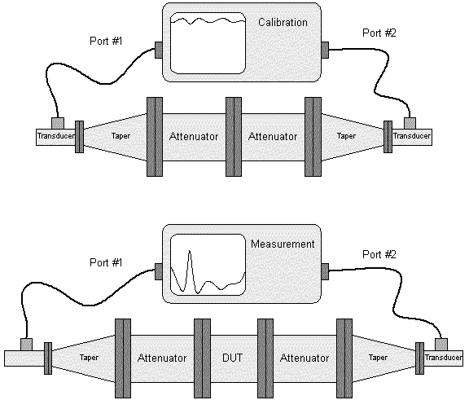
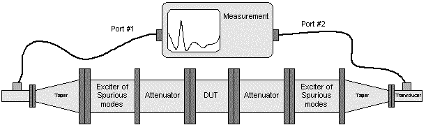

There is shown how transmission corresponding to high (overmoded) frequencies cannot be measured. First of all ripples of multimoded standing wave are likely to be transferred into the device memory during calibration. Greater errors are caused by spurious modes reflected by the device and closed between the device and the tapers. Evaluated accuracy is 20 dB typically.

This is how to evaluate transmission response of DUT for the dominant TE10-mode. This procedure is much more accurate ( 2 dB).

As frequency spectrum corresponding to harmonics can be carried by various waveguide modes, filters should generally be tested for any single waveguide mode able to propagate. However multi-moded testing involves many sophisticated and expensive waveguide components such as mode exciters, suppressing filters, transducers, attenuators etc. For many practical applications the simple procedure shown on the picture above can be used. There are two exciters of spurious modes are put in the setup. Waveguide bends, twists or steps may be used as exciters. The procedure indeed does not tell what particular mode propagating through the filter, but it evaluates filter operation in general